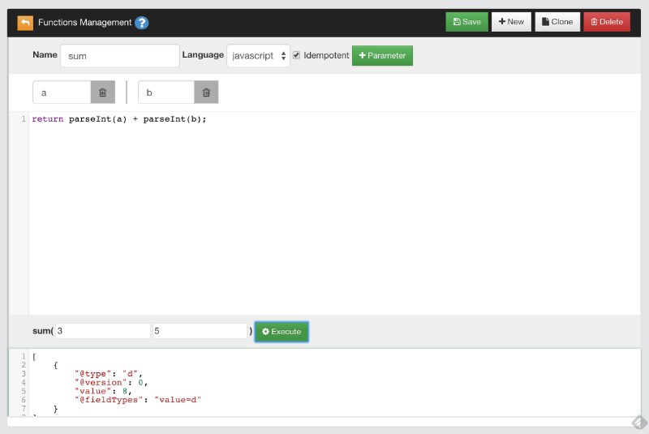
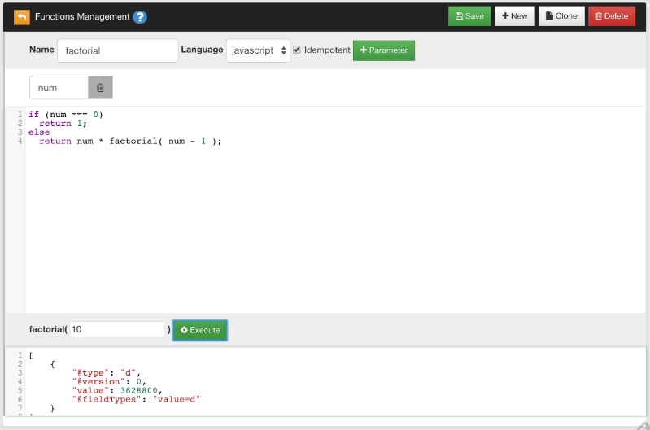

Creating Functions
In addition to the functions provided in OrientDB by default, you can also create your own functions.
Using OrientDB Studio
You can do so through the OrientDB Studio. To create a sample function, complete the following steps:
-
In Studio, open a database and navigate to the Functions panel.
-
Enter
sumas a name, then add two parameters:aandb. -
Give the function the following code in the text area:
return parseInt(a) + parseInt(b); -
Click Save.
This adds the function sum to the database. In Studio, it appears on the left-side with the available functions.
On the bottom of the page, there are two empty boxes in which you can test the function. Write 3 in one and 5 in the other, then click Execute to see the results.

Why using
parseInt()instead ofa + b? Because HTTP protocol passes parameters as strings.
Saved Functions
OrientDB saves functions in the database, using the OFunction class. This class has the following properties:
| Property | Description |
|---|---|
name | Defines the name of the function. |
code | Defines the code the function executes. |
parameters | Defines an optional EMBEDDEDLIST of strings, containing the parameter names, if any. |
idempotent | Defines whether the function is idempotent, that is if it changes the database. Read-only functions are idempotent. This is needed to avoid calling non-idempotent functions using the HTTP GET method. |
Given that OrientDB uses one record per function, the MVCC mechanism is used to protect against concurrent record updates.
Using Recursive Calls
Functions can call on other functions in order to process the results. They can also call themselves in a recursive call.
For instance, create a new function with the name factorial. Give it the parameter num, with the following code:
if (num === 0)
return 1;
else
return num * factorial( num - 1 );

When you call factorial(), it calls itself in order to determine the factorial of the given num value, until it reaches the result, which in the case of the test is 3648800.0.